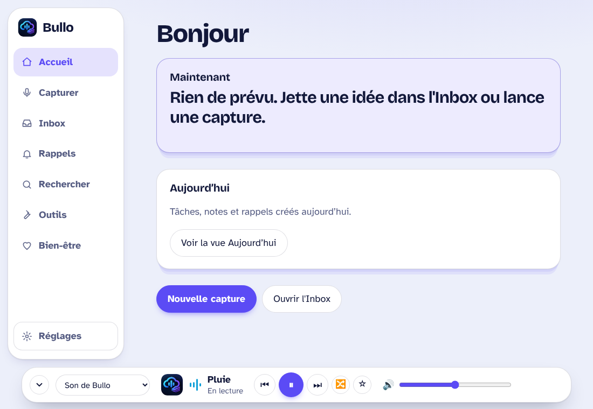
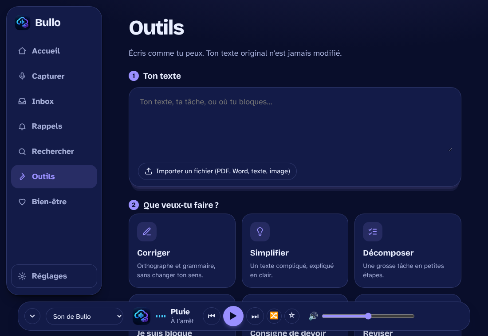
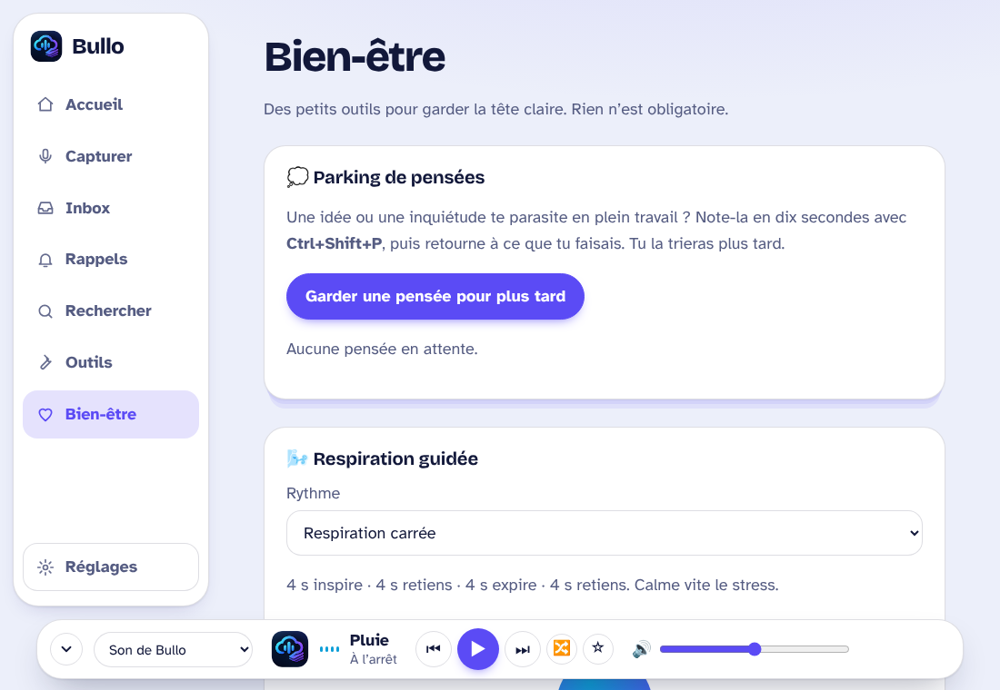

Étudier sans lutter contre ton cerveau.
Bullo capture tes cours, en tire l'essentiel et te le rappelle au bon moment, dans une interface qui s'adapte à toi.

Trois gestes, pas plus.
Pas de dossier à ranger ni de système à apprendre. Tu déposes, Bullo s'occupe du reste.
Capture
Parle, écris, ou dépose un PDF, un Word ou une image. La transcription se fait sur ton Mac.
Comprends
Un résumé clair, les devoirs et les dates repérés, et les grosses tâches découpées en petites étapes.
Retiens
Des rappels doux, la lecture à voix haute et une recherche dans tous tes cours.
Une interface qui se plie à toi.
Essaie ici, avec les mêmes réglages que dans l'application.
Lire demande déjà beaucoup d'énergie. Ici, tu règles la taille, l'espace entre les lignes et le contraste jusqu'à ce que le texte te laisse tranquille.
- Polices pour la dyslexieOpenDyslexic, Lexend, Atkinson Hyperlegible, Verdana, Arial, Comic Sans.
- Thèmes et couleursClair, sombre, thème doux, mode daltonien, contraste élevé.
- Mouvement réduitPlus aucune animation si elles te fatiguent.
- Bien-être intégréParking de pensées, respiration guidée, pauses douces.
- Fond sonoreDes sons doux générés par Bullo, ou le contrôle de ta musique.
À quoi ça ressemble.


Captures d'écran du simulateur de l'interface.
Installer Bullo.
Trois minutes. Pour Mac avec puce Apple (M1 et suivantes).
Glisse
Ouvre le fichier et glisse Bullo dans le dossier Applications.
Autorise, une seule fois
Bullo n'est pas encore signé par Apple, donc macOS le croit « endommagé ». Ouvre le Terminal, colle cette ligne, puis ouvre Bullo.
xattr -cr /Applications/Bullo.appQuestions fréquentes.
Où vont mes données ?
Nulle part ailleurs que sur ton ordinateur. Notes, enregistrements et réglages restent chez toi. La sauvegarde Google Drive est facultative et utilise ton propre compte.
Pourquoi cette ligne dans le Terminal ?
Pour qu'une application soit ouverte sans avertissement, Apple demande une signature payante (99 $ par an). Bullo est gratuit et pas encore signé. La commande retire seulement l'étiquette « téléchargé depuis Internet » ; le fichier n'est pas modifié. Tu peux vérifier le code sur GitHub.
Faut-il internet ?
Non pour l'essentiel. Le résumé et la transcription se font sur ton Mac avec Whisper et Ollama, à installer une fois (le guide est sur GitHub). Internet sert à installer ces outils et, si tu le choisis, à sauvegarder sur Google Drive.
Et sur Windows ou Linux ?
Pas pour l'instant : Bullo est écrit pour Mac Apple Silicon. Une version pour d'autres systèmes fait partie des idées de la feuille de route.
C'est une version finie ?
C'est une version 1.0 : testée surtout par son auteur, avec des fonctions propres au Mac encore en validation. Si quelque chose ne marche pas, une « Issue » sur GitHub suffit, avec ce que tu as vu à l'écran.
Qui a fait Bullo ?
Vibe codé par Renz-VASA, avec un peu d'intelligence artificielle. Le projet est libre, sous licence MIT.